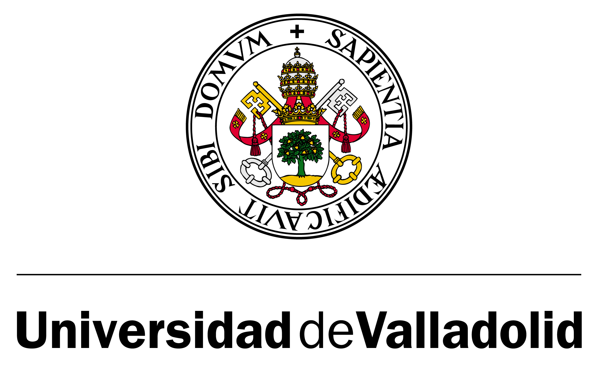
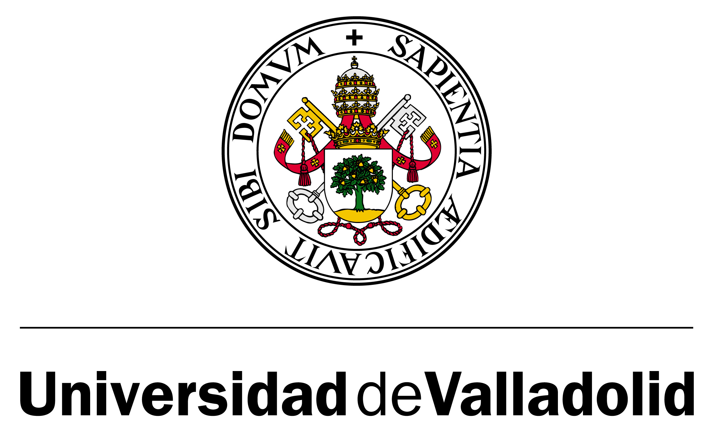

David Méndez Sevillano
Curriculum Vitae
Introduction
My name is David Méndez Sevillano (he/him) and I currently hold a position as Data Scientist in Janssen Vaccines and Prevention. I’m 38 and I’ve lived in Delft, the Netherlands for 12 years. I am passionate about finding not-obvious meaning in data and visualizing it to convey a story.
Work Experience
(2021 - current) Data Scientist at Janssen Vaccines and Prevention: As part of the Drug Product Development department I have coordinated efforts on both data engineering and data science projects. I am lead of the data capture projects by gathering and centralizing all data sources into a data lake. I act as lead and developer for several ML, statistical modelling and data visualization projects and develop data pipelines to dashboards for automatic reporting. Moreover I am involved into defining the digital strategy for the organization. I also lead several initiatives at a site, department, group and subgroup level mentoring and leading a group of 6 people.
(2017 - 2020) Process Engineer at Process Design Center: My main responsibilities within PDC are the process design and techno-economic evaluation of bioprocesses. In most projects, lab data needs to interpreted and modelled in order to simulate and optimize the process. Modelling has been done using from polynomic equations to complex activity coefficient models or kinetics. Moreover I have used Octave and python for developing and I have strengthen my knowledge of Aspen Plus for simulation and regression of parameters (together with their uncertainty).
(2016-2017) Head Reserarcher and docent at Center of Expertise for the Biobased Economy: My responsibilities within this position were the research and development of a medium scale separation and purification unit of proteins from duckweed and teaching thermodynamics, separation technology and MATLAB. On top of that I collaborated with a PhD student from Wageningen UR to model solubility of amino-acids in mixed solvents according to different models of increasing complexity using MATLAB (see publication 11)
(2014-2015) Post-doc at TU Delft: My scientific responsibilities were to develop a preparative fractionation protocol to fractionate polyphenols from complex mixtures using an Äkta system. I fitted a complex chromatogram to a sum of multiple peaks that allowed me to decide how the fractionation needed to happen. These fractions were further used to find interesting health related molecules (see publication 12, 13, 14)
(2010 - 2014) PhD at TU Delft: My main research topic was the determination and modelling of polyphenol properties. I first determined of the properties of polyphenols in complex mixtures by using different analytical techniques (UPLC, FTIR, etc.) and high throughput techniques, namely the Tecan liquid handling system to generate data. I designed adsorption experiments (DoE) in order to regress low uncertainty parameters (see publication 5). I regressed and fit parameters for activity coefficients, solubility and adsorption isotherms (see publication 4, 5, 6 7, 8) comparing models, looking at uncertainty and error propagation and studying the importance of the different parameters on MATLAB.
(2003 - 2010) Chemical Engineering at Universidad de Valladolid: Focus on chemical and biochemical plant design and techno-economic analysis, knowledge of transport phenomena, kinetics and thermodynamic fundamentals. During which I fit solubility of gases in ionic liquids to a GC-EoS using MATLAB (see publication 1, 2)
 
Additional courses
Statistical Subject Matter Expert Course (Janssen); Data Science using R; Aspen Plus, Handling solids; Introduction into COMSOL (TU Delft); Protein chromatography (BOKU Vienna) Thermodynamics of process technology (TU Delft), Adsorptive processes (TU Eindhoven)
Software Experience
R, Python, Aspen, MATLAB, Microsoft 365
Other
- Languages: Spanish (Native), English (C2), Dutch (C1)
- Hobbies: Travelling, running, boardgames, filmhuis movies, data visualization
Publications
- J. Chem. Thermodyn. 2010, 42, 524-529
- Ind. Eng. Chem. Res. 2010, 49, 4966–4973
- J Supercritical Fluids 2012, 69, 113-116
- Ind. Eng. Chem. Res. 2013, 52, 6039-6048
- Food and Bioproducts Processing 2014, 92 (2), pp. 192-198
- Ind. and Eng. Chem. Res. 2014, 53 (39), pp. 15245-15252
- J. Chrom. A 2014, 1341, pp. 41-49
- Fluid Phase Equilibria, 2014, 384, pp. 82-88
- Ind. and Eng. Chem. Res. 2015, 54 (2), pp. 691-699
- J. Chrom. A. 2016, 1476, 25-34
- Fluid Phase Equilibria, 2018, 459, 158-169
- Phytochemistry reviews 2018, 17(2), 291-326
- Plan physiology, 2019, 179 (3), 969-985
- Nature Communications 2023, (14) 1918